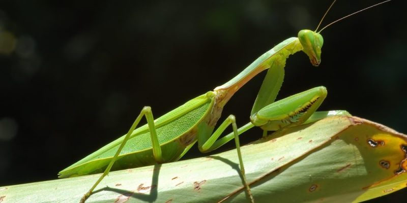

Exoesqueleto de quitina y patas articuladas.
Simetría pentarradiada, esqueleto externo de piezas calcáreas.

Son invertebrados protóstomos celomados, triblásticos de simetría bilateral no segmentados, de cuerpo blando, desnudo o protegido por una concha.
Son un filo de animales acuáticos que se encuentran enclavados dentro del subreino Parazoa.
Los nematodos, también conocidos como nematelmintos, son un filo de vermes seudocelomados.